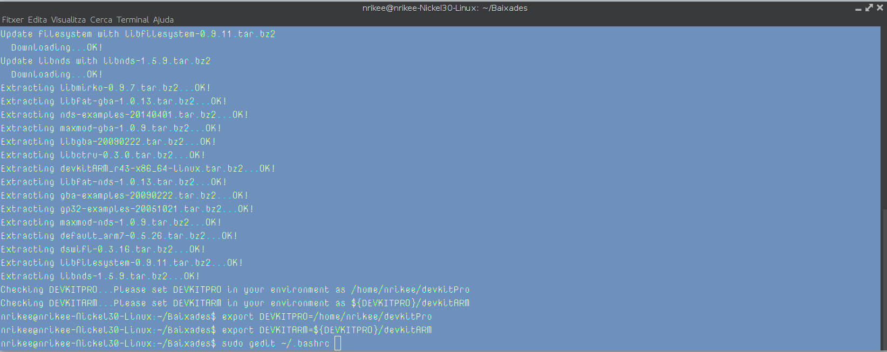

Chrome says
El joc és l'adaptació del clàssic “Simon says” a la consola Nintendo DS. No obstant, i per tal de dotar al projecte d'una mica de personalitat pròpia, canviarem el clàssic disc de quatre colors pel logotip del navegador Google Chrome, emprant els seus quatre colors com a tecles del disc.
Practica 1: Preparacio de l'entorn
Instal·lació de l'entorn
Primer hem descarregat l'script de la pàgina web i l'hem executat, instal·lant així l'entorn. A més hem afegit les variables del sistema, i les hem fet permanents.
Instruccions necessaries
wget -O devkit.pl http://downloads.sourceforge.net/project/devkitpro/Automated%20Installer/devkitARMupdate.pl?r=http%3A%2F%2Fsourceforge.net%2Fprojects%2Fdevkitpro%2Ffiles%2FAutomated%2520Installer%2F&ts=1425297393&use_mirror=cznic
sudo perl devkit.pl
echo "export DEVKITPRO=~/devkitPro" >> ~/.bashrc
echo "export DEVKITARM=${DEVKITPRO}/devkitARM" >> ~/.bashrc

Compilació dels exemples
Hem descarregat els exemples i hem vist que alguns que hi ha en la pàgina web no estan als exemples descarregats, com ara l'exemple capture. Als exemples descarregats també hi han alguns que no estan a la web.
Compilació dels exemples
Anem a provar ara alguns dels exemples a ambdós emuladors per tal de comprovar les possibles diferències entre els mateixos, compilant-los amb l'ordre make.
ds_motion
hello_world
Tots els exemples que s'han provat a DesMuMe s'han executat sense cap tipus de problema, no obstant, alguns han fallat a l'emulador no$gba. Com ara, l'exemple 16bit_color_bmp.nds.
Instal·lació a Windows
Per a la instal·lació a una màquina amb sistema operatiu Windows 7, el procés ha sigut simple. Des de la mateixa pàgina web d'on hem baixat el devkitpro per a Linux, s'ha baixat l'arxiu .exe corresponent a la versió 1.5.4. Una vegada baixat, s'ha executat seguint els passos de l'assitent d'instal·lació sense cap tipus de problema.

Una vegada instal·lat, simplement cal anar a la carpeta corresponent devkitpro\examples\nds i compilar els exemples mitjançant l'ordre make.

Pràctica 2: Accés a la informació en el hardware
0. Descàrregues
1. Accés al sistema
Per tal d'accedir a les dades del sistema, simplement hem tingut que incloure la capçalera
system.h de libnds, i després accedir a l'estructura PersonalData des d'on poden extraure el nom
d'usuari, aniversari, color del tema, etc. Després simplement hi ha que mostrar eixes dades en
pantalla.
2. Funcions relacionades amb el pas del temps
A aquest apartat ens donen tres funcions, de tres exemples, i ens pregunten sobre elles o els seus arguments. Passem a veure les funcions i resoldre les preguntes pas a pas.
timerStart(0, ClockDivider_1024, 0, NULL);
Aquesta funció inicialitza un temporitzador que cridarà al seu últim argument (en aquest cas no) segons la freqüència que se li indique. El segon argument indica el canal del temporitzador, mentre que el tercer són el nombre de ticks que deuen passar fins que es produïsca l'overflow.
timerStart(0, ClockDivider_1024,TIMER_FREQ_1024(5), timerCallBack);
En aquest cas la novetat són els dos últims arguments: el tercer indica que es cridarà al quart una vegada cada cinc segons. El quart, com ja hem dit, serà la funció a la que cridarà el timer, en aquest cas, cada cinc segons.
Per acabar se'ns pregunta sobre l'exemple RealTimeClock. En concret, quines són les funcions que es gasten per endevinar l'hora i la data.
Si mirem el codi, podem observar que aquestes són les línies concretes on s'extrau la informació del sistema:
time_t unixTime = time(NULL);
struct tm* timeStruct = gmtime((const time_t *)&unixTime);
hours = timeStruct->tm_hour;
minutes = timeStruct->tm_min;
seconds = timeStruct->tm_sec;
day = timeStruct->tm_mday;
month = timeStruct->mon;
year = timeStruct->tm_year+1900;
3. Gestió de l'entrada d'usuari
En aquest apartat se'ns demana executar cinc exemples, anem a mostrar captures dels mateixos i explicar la seua funcionalitat.
keyboard_async
Aquest exemple no és més que un simple teclat sense cap tipus de funcionalitat llevat de poder escriure a la pròpia pantalla de la NDS.
keyboard_stdin
Al contrari que l'exemple anterior, aquest és un programa que ens pregunta el nostre nom. Una vegada l'introduïm amb el teclat (el mateix que a l'exemple anterior) aquest desapareix i ens contesta Hello (nom).
touch_area
Aquest exemple ens diu el punt que hem tocat de la pantalla tàctil, així com la pressió i, depenent de l'àrea, ens diu si hem tocat la pantalla amb el dit o l'estilus (en aquest cas ratolí ja que és un emulador).
touch_look
Ací estem a un entorn 3D pel qual podem rotar la càmera (però no desplaçar-la) tocant la pantalla inferior. Si llisquem cap a l'esquerra, la càmera gira cap a l'esquerra, etc. El moviment és completament lliure.
touch_test
Per acabar, aquest últim exemple ens diu les coordenades on hem tocat la pantalla tàctil i, a més a més, deixa l'sprite d'un punt roig a eixes coordenades. És molt similar a l'exemple touch_area llevat del punt roig i que, aquest, no ens diu la pressió ni si hem tocat amb el dit o no.
4. Treball autònom
Com a treball autònom se'ns demana crear un programa on l'usuari puga triar quines dades emmagatzemades en la consola, vol visualitzar. Adjuntem el codi font i l'arxiu Makefile amb aquest exercici resolt. Ací podem veure una captura del programa en execució.
Pràctica 3: Entrada i sortida de dades
0. Descàrregues
1. Gestió dels controls
En aquest primer exercici se'ns demana que desenvolupem un programa que ens comunique l'estat dels tretze botons de la consola (si estan premuts o no).
El funcionament de dit programa és simple, ja que tenim una funció keysDown() que ens indica si s'ha premut un botó. A partir d'ahí simplement cal mostrar per pantalla quins ho han fet, i quins no. Adjuntem el codi font junt a aquesta memòria a la carpeta ex1P3.
2. Ús avançat del text a la pantalla
A aquest segon apartat ens donen cinc exemples que hem d'executar i observar per tal d'indicar el seu funcionament. Passem a mostrar a continuació les captures dels programes executant-se i les seues explicacions:
custom_font

Aquest exemple només ens mostra una tipografia diferent a l'hora de mostrar text en pantalla. No podem interactuar en ell de cap manera, però està pensat per a poder observar el codi i així saber com incloure una nova tipografia.
print_both_screens
L'única interacció d'aquest programa és que ens marca les coordenades del punt on hem tocat la pantalla tàctil. A la pantalla superior té un text fixe que no varia. La utilitat d'aquest programa és aprendre a escriure text a ambdues pantalles.
rotation
Mitjançant els botons, a aquest programa, podrem desplaçar i deformar la imatge de la pantalla superior.
rotscale_text
console_windows
Aquest simple programa divideix la pantalla tàctil en dos. Si toquem la part esquerra, ens mostra la coordenada Y a la part esquerra, si toquem la dreta, ens mostra la mateixa coordenada a la dreta.
3. Sistema d'arxius
Aquest últim exercici ens demana executar els dos exemples de sistemes d'arxius nitrofs i fat, i fer captures de l'execució dels mateixos.
Pràctica 4: Àudio amb Maxmod
Reproducció d'àudio
Aquest primer exercici és introductori. Hem de respondre un parell de preguntes, com ara indicar com incloure la biblioteca Maxmod a un codi i com generar el banc de sons. La primera pregunta és simple, la biblioteca s'inclou com qualsevol altra biblioteca que vaja a ser emprada:
#include <maxmod9.h>
A més a més, caldrà afegir les capçaleres del banc de sons (que ara després indicarem com es genera):
#include “soundbank.h”
#include “soundbank_bin.h”
Pel que fa a la generació del banc de sons, es fa al Makefile, és a dir, es genera a l'hora de compilar el projecte. Concretament, es genera amb aquesta regla del Makefile:
#------------------------------------------------------------
# rule to build soundbank from music files
#------------------------------------------------------------
soundbank.bin : ${AUDIOFILES}
#------------------------------------------------------------
@mmutil $^ -d -osoundbank.bin -hsoundbank.h
Reproducció de fitxers modulars per a música
L'única pregunta d'aquest exercici és simple: Quina diferència hi ha al Makefile entre l'exemple anterior i l'exemple audio_modes per a que al primer els arxius d'àudio estiguen a la carpeta maxmod_data i al segon, a la carpeta audio. La resposta és encara més simple. Al principi del Makefile indiquem quins són els directoris que contenen cada element. Només cal modificar la línia següent:
MUSIC := maxmod_data
La part dreta pel nom del directori on estiguen els arxius de música.
Sincronització d'esdeveniments
Aquest problema ens pregunta per la funció de l'exemple song_events_example que s'encarrega de tractar els missatges enviats pels esdeveniments. La funció és la següent:
mm_word MyEventHandler( mm_word msg, mm_word param ) {
switch( msg ) {
case MMCB_SONGMESSAGE:
if (param == 1) spriteDy = -16;
break;
case MMCB_SONGFINISHED:
break;
}
return 0;
}
Com veiem, és molt simple. Rep dos arguments, el primer és el tipus de missatge a tractar, mentre que el segon ens indica si l'sprite té que botar (ja que té que fer-ho al ritme de la música). En cas que el primer argument siga missatge de la cançó, es comprova si el segon és actiu, si ho és, es canvia la velocitat de l'sprite, si no, s'acaba. En cas de que el primer argument siga un missatge de finalització, no passa res.
L'últim exercici, també d'aquest apartat, ens pregunta per l'exemple song_events_example2 i com és possible que s'identifiquen cinc esdeveniments diferents. La resposta és simple, a la mateixa funció que a l'exercici anterior, en lloc de comprovar si el segon argument és 1, ací es comprova si és 1, 2, 3, 4 o 5. Amb això sabem quin sprite és el que hi ha que actualitzar. La resta, segueix el mateix esquema que l'exercici anterior.
Treball autònom
Com que aquest treball era la incorporació d'un efecte de bot a la pilota, i un tema de música al Bouncing Ball Game que ja s'entregà a la seua tasca corresponent, no adjuntarem el projecte.